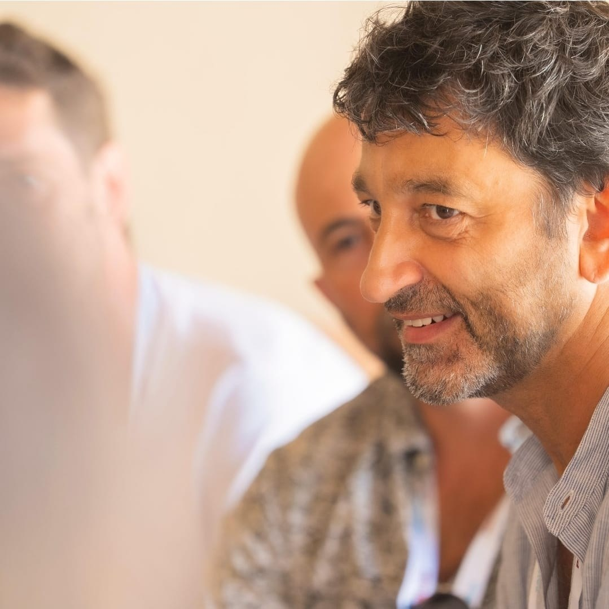

un ricordo collettivo
Annibale era un’anima antica, e per questo molto potente. Ha guidato la speranza prima ancora del cambiamento, perché senza speranza nessuna comunità può innescare cambiamenti, soprattutto se rivoluzionari. Amava i bollenti spiriti: le persone inquiete, curiose, che non si accontentano. A loro ha dedicato spazio, fiducia e lavoro.
La speranza che ha costruito in ognuno dei giovani che ha aiutato, nei progetti generativi che ha sostenuto, nelle persone che lo amavano e che lui amava, oggi è viva in tutti noi. E riparte da qui.
Nome e messaggio saranno pubblicati sul sito dopo una revisione. L'email, se la lasci, resta privata e serve solo a ricontattarti.